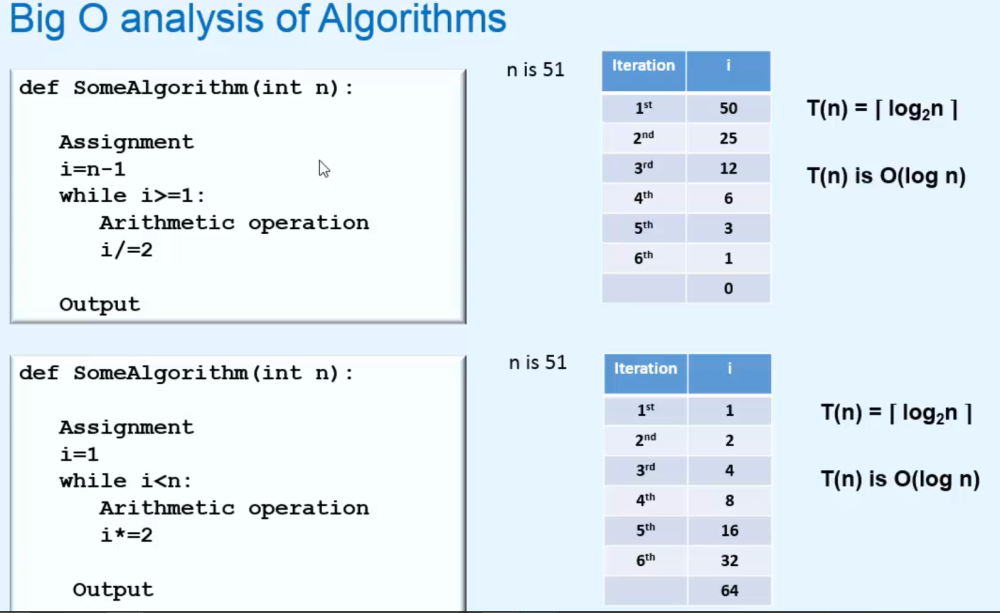
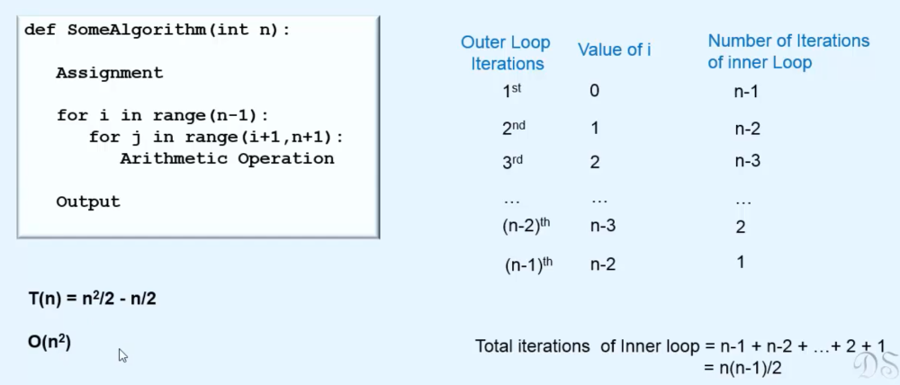
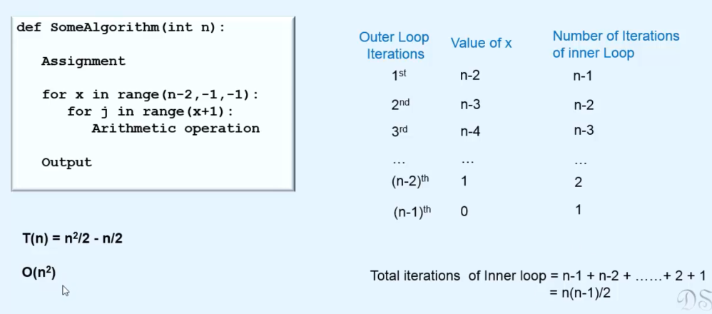

Index
Complexity Analysis theory
What is Complexity Analysis ?
• Suppose you have given two or more alogithm to solve a problem, how do you select best one .
• So We mainly have 3 criteria to focus on: a) Maintaibility and Scalability b) Time Complexity c) Space Complexity
• >Efficiency of an algorithm should be machine indpendent i.e if an algorithm performs really well on machine A but not on machine B then it is not good.
• For determining the efficiency of an algorithm :
• you need to find out NO._OF_BASIC_OPERATIONS an algorithm performs and how those no. of basic operations get affected when INPUT_SIZE increases
• Basic Operations: Those operations which need always same or constant amount of time to execute like comparison, arithmatic operations, memory access, assignments, input, output etc.
• Non Basic Operations: Sorting, Searching inside an array are non basic operations.
• >Since often TIME_COMPLEXITY is used over Space_Complexity to find the efficiency of an algorithm, let's focus on time_complexity:
How to calculate Running time ( T(n) )of an algorithm ?
1. Best case : is useless because we don't get such good inputs in real world scenerio
2. Average case : is useful but often difficult to determine
3. Worst case : is the Most important for almost all kinds of large applications.
>>> Here we are not concerned about how much time an operation takes to execute on a computer BUT rather HOW MANY TIMES THAT OPERATION EXECUTES IN PROGRAM.
CONCLUSION 1: The time complexity of Loops in which control variable is incremented or decremented by a constant number is O(n).

CONCLUSION 2: In a Loop if the control variable is divided or multiplied then time_complexity is O(logn)
CONCLUSION 3: In case of nested-loop, time complexity of inner-most loop will be faster growing so it's time complexity will always be dominant to innermost-loop.
CONCLUSION 4: The figure is self-explanatory.
CONCLUSION 5: The figure is self-explanatory.

CONCLUSION 6: When iteration of inner-loop depends on index of outer-loop, then no. of total iteration of inner-most loop is added.

CONCLUSION 7: Same as Conclusion 6
CONCLUSION 8: It is a Selection Sort Algorithm
CONCLUSION 9: It is a Bubble Sort Algorithm

CONCLUSION 10: In case of if else statements, the condition whose order is larger is considered, So since order of if block is n2 and else block is n,
finally order of if block is considered.

CONCLUSION 11: If an algorithm executes constant no. of times no matter what is the size of input(independent of input size), the order of such algorithm is always O(1).
Examples, SwapFirstLast(), printlastElement(), returnSizeoFStact(), this above figure example.
☐ O(1) → Constant → inserting an element at first location of an array
☐ O(logn) → Logarithmic → solves problems by dividing large problem into smaller problems → Binary Search
☐ O(n) → Linear → algorithms that print all elements of an array or insert an element at the end of a linkedlist
☐ O(nlogn) → Linear logarithmic → Merge Sort algorithm
☐ O(n2) → Quadratic → algorithms that involves nested iterations over the input → Bubble Sort & Selection Sort
☐ O(n3) → Cubic → matrix multiplications
☐ O(nK) → Polynomial
☐ O(an) → Exponential → tower of hanoi problem